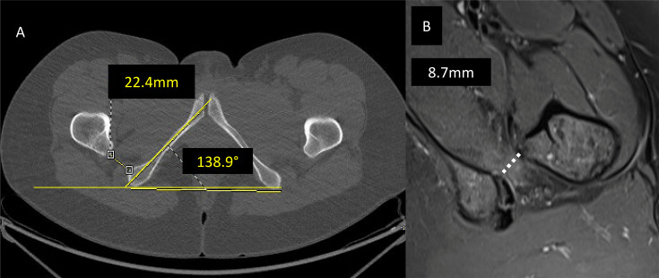
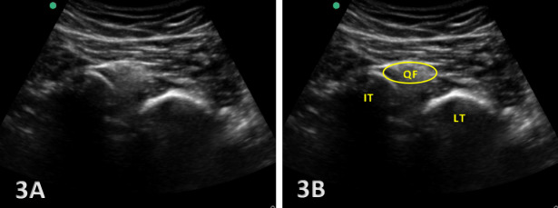
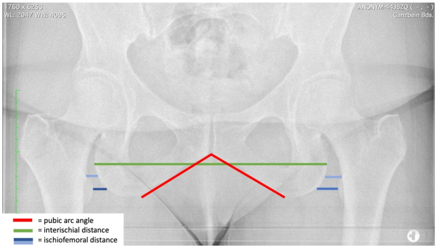
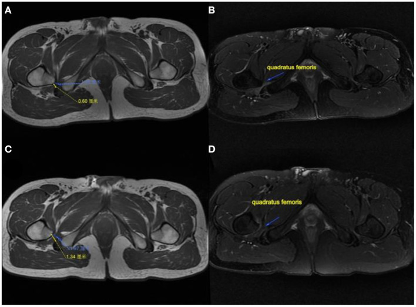

382 — Ischiofemoral impingement: hẹp khoảng mấu chuyển nhỏ – ụ ngồi, phù cơ quadratus femoris & ngưỡng can thiệp
Tags: pattern:hep-khoang pattern:phu-co pattern:dau-mong-sau pattern:chen-ep-than-kinh vung:hong vung:mong-sau anatomy:quadratus-femoris protocol:MRI-hong protocol:CT-hong protocol:tiem-sieu-am incidentaloma:khong
Mức chắc chắn (certainty): tổng hợp y văn (literature synthesis) — ghép nghiên cứu 250 bệnh nhân đau hông không do viêm khớp (Bone Jt Open 2026, PMC13270448), 256 hông trong phẫu thuật bảo tồn khớp (2025, PMC11971088), tổng quan chèn ép ngoài khớp (EFORT Open Rev 2025, PMC12494060), 197 hông sau thay khớp háng (Eur Radiol 2024, PMC11166821), hình thái khung chậu nữ (J Clin Med 2023, PMC9968236), kỹ thuật siêu âm (Int J Sports Phys Ther 2024, PMC11837867) và 4 ca mổ nội soi mấu chuyển nhỏ (Front Surg 2022, PMC8888844). Không có ca do nhóm tự chụp.
Câu hỏi thực hành: nữ 46 tuổi, đau mông sâu bên phải 8 tháng, đau tăng khi bước dài, leo cầu thang, xoay trong hông; khám nghiệm pháp ischiofemoral impingement (IFI) dương tính, không đau khớp háng. MRI hông: phù cơ quadratus femoris, khoảng ischiofemoral hẹp. Câu hỏi: có phải IFI thật không, đo ở đâu và ngưỡng nào, hay chỉ là phù cơ do gắng sức; và khi nào tiêm – khi nào mổ? Bài chốt ba quyết định: (1) chẩn đoán = hẹp khoảng + phù cơ trên MRI, không phải đau mông đơn thuần; (2) ngưỡng IFS < 15 mm và QFS < 10 mm là ngưỡng hỗ trợ, không phải chốt tuyệt đối; (3) điều trị khởi đầu luôn là bảo tồn – tiêm hướng siêu âm, mổ chỉ khi thất bại và có hẹp thực sự.
1. Tổng quan bệnh học – cơ chế hình ảnh: vì sao 2 mm hẹp lại gây đau mông sâu
- Giải phẫu – hai khoảng cần đo:
- Khoảng ischiofemoral (ischiofemoral space — IFS): khoảng ngắn nhất giữa vỏ xương phía trong mấu chuyển nhỏ (lesser trochanter) và vỏ xương phía ngoài ụ ngồi (ischial tuberosity), đo trên lát cắt trục (axial) của CT hoặc MRI.
- Khoảng cơ quadratus (quadratus femoris space — QFS): khoảng hẹp nhất mà cơ quadratus femoris phải chui qua, giới hạn bởi gân iliopsoas/mấu chuyển nhỏ phía trước và gân gốc cơ gân kheo (hamstring) phía sau — đây là nơi chèn ép chức năng thực sự.
- Cơ quadratus femoris bám từ bờ ngoài ụ ngồi tới mào liên mấu chuyển mặt sau xương đùi; thần kinh tọa (sciatic nerve) chạy ngay sau cơ → chèn ép cơ gây đau lan kiểu sciatica (EFORT Open Rev 2025, PMC12494060).
- Ngưỡng định lượng (bắt buộc nhớ):
| Thông số | Giá trị | Nguồn |
|---|---|---|
| IFS ở người khỏe | 18–26 mm | EFORT Open Rev 2025 |
| IFS ở IFI vs chứng (gộp) | 14,91 ± 4,8 mm vs 26,01 ± 7,98 mm | EFORT Open Rev 2025 (meta-analysis) |
| Ngưỡng IFS | < 15 mm: Se 76,9% – Sp 81,0% – độ chính xác 78,3% | EFORT Open Rev 2025 |
| Ngưỡng QFS | < 10 mm: Se 78,7% – Sp 74,1% | EFORT Open Rev 2025 |
| IFS giảm theo tuổi | −0,09 mm mỗi năm | EFORT Open Rev 2025 |
| IFS nữ vs nam | nam rộng hơn 31% (p < 0,001); góc mu–mu nữ +30%, khoảng liên ụ ngồi nữ +7% | J Clin Med 2023, PMC9968236 |
| Siêu âm | IFS trung bình 2,14 cm | EFORT Open Rev 2025 |
- TẠI SAO hẹp → phù cơ: chèn ép lặp lại khi duỗi – xoay trong – bước dài làm cơ thiếu máu cục bộ vi mô + tổn thương sợi cơ → phù gian bào (T2/STIR tăng tín hiệu, T1 bình thường); nếu kéo dài → teo và thoái hóa mỡ (T1 tăng tín hiệu, thể tích cơ giảm) (EFORT Open Rev 2025; Front Surg 2022).
- Ai bị – con số thật:
- 5,6% (14/250) bệnh nhân đau hông không do viêm khớp, tất cả là nữ; IFS 24,8 ± 6,7 mm vs 34,9 ± 10,2 mm ở nhóm chứng (p < 0,001), QFS 9,2 ± 3,4 mm vs 20,7 ± 7,0 mm (Bone Jt Open 2026, PMC13270448);
- 9% (23/256 hông) ở người trẻ được đánh giá cho phẫu thuật bảo tồn khớp; IFS 1,7 ± 0,6 cm vs 2,8 ± 0,7 cm (p < 0,001); góc ụ ngồi > 127° là yếu tố dự báo độc lập (OR 5,9; KTC 1,3–27,1) (PMC11971088);
- sau thay khớp háng (THA) đường vào trước: 197 hông, góc anteversion xương đùi sau mổ 22,5 ± 6,8°, thay đổi 3,6 ± 3,3°; thay đổi anteversion dự báo IFI với AUC 0,859 (anteversion đơn thuần AUC 0,726) (Eur Radiol 2024, PMC11166821).
- Vì sao nữ nhiều hơn: khung chậu nữ có ụ ngồi rộng hơn, góc mu–mu lớn hơn, làm IFS nhỏ hơn — đây là khác biệt giải phẫu, không phải “bệnh của nữ”; và IFS giảm dần theo tuổi giải thích vì sao người lớn tuổi cũng gặp (EFORT Open Rev 2025; J Clin Med 2023).
- Cơ chế hẹp mắc phải: coxa valga, loạn sản khớp háng (DDH), di chứng Legg–Calvé–Perthes, gãy đầu trên xương đùi, u sụn xương (osteochondroma), thoái hóa khớp làm xương đùi trượt lên trên – vào trong, cắt xương valgus, anteversion xương đùi tăng (EFORT Open Rev 2025).
2. Mẫu hình + chẩn đoán phân biệt theo vị trí đau (Gamut)
- Mẫu hình 1 — “đau mông sâu + phù cơ quadratus femoris”: IFS hẹp ± QFS hẹp, phù cơ, không tràn dịch khớp háng → IFI (thể cơ học/động).
- Mẫu hình 2 — “đau mông sâu + teo cơ + không phù”: IFI mạn (thoái hóa mỡ) hoặc chèn ép thần kinh tọa; phân biệt bằng tín hiệu thần kinh tọa trên MR neurography.
- Mẫu hình 3 — “đau mông + dấu hiệu chèn ép thần kinh”: gamut hội chứng cơ hình lê (piriformis syndrome), hội chứng mông sâu (deep gluteal syndrome), IFI, u/dây thần kinh, di chứng gãy khung chậu.
- Mẫu hình 4 — “hẹp khoảng do xương”: osteochondroma, di chứng chấn thương, sau THA/cắt xương — cần CT để đo xương chính xác và lập kế hoạch mổ.
- Mẫu hình 5 — “hẹp khoảng hai bên, không triệu chứng”: biến thể giải phẫu; không can thiệp nếu không có phù cơ + đau tương ứng.
- Gợi nhớ theo vị trí: đau mông sâu → nghĩ IFI, piriformis, hamstring, dây thần kinh tọa; đau bẹn → nghĩ FAI, iliopsoas, subspine; đau mấu chuyển lớn → nghĩ GTPS (gluteal tendinopathy). IFI hiếm khi đau bẹn đơn thuần.
3. Bảng so sánh phân biệt (ma trận đối chiếu)
| Thực thể (entity) | Hình ảnh điển hình | Chốt vào (rule-in) | Chốt loại (rule-out) | Gợi ý xác nhận |
|---|---|---|---|---|
| Ischiofemoral impingement | IFS < 15 mm, QFS < 10 mm, phù cơ quadratus femoris trên T2/STIR, ± teo mỡ | Đau mông sâu + nghiệm pháp IFI/LSW dương tính + IFS hẹp + phù cơ QF | IFS > 18 mm + cơ QF bình thường → không phải IFI | MRI trục T2FS; tiêm hướng siêu âm giảm đau |
| Piriformis syndrome | Phì đại/viêm cơ hình lê, tín hiệu thần kinh tọa, dày dây thần kinh; IFS bình thường | Đau khi xoay trong + chèn ép cơ hình lê + IFS bình thường | IFS hẹp + phù QF → nghĩ IFI hơn | MRI trục + MR neurography; tiêm cơ hình lê |
| Bệnh gân gốc cơ gân kheo (proximal hamstring tendinopathy) | Dày gân > 2 mm, tăng tín hiệu gân tại ụ ngồi, phù mô quanh gân | Đau khi ngồi xổm/ngồi lâu, đau ngay ụ ngồi, gân dày | Không dày gân + phù cơ QF → nghĩ IFI | MRI trục + sagittal; siêu âm |
| FAI / rách sụn viền | Sụn viền rách, cam/pincer, tràn dịch khớp; IFI có thể kèm theo | Đau bẹn + nghiệm pháp FADIR + sụn viền rách | IFI: đau mông sâu, không đau bẹn | MR arthrography; X-quang khung chậu |
| Thoái hóa khớp háng | Hẹp khe khớp trên–trong, xơ xương dưới sụn, xương đùi trượt lên trên → IFS hẹp thứ phát | Hẹp khe khớp + gai xương + tuổi lớn | Khe khớp bình thường → không quy cho thoái hóa | X-quang, CT |
| Osteochondroma vùng mấu chuyển/ụ ngồi | Cuống xương tủy liên tục với xương gốc, sụn bọc, có thể chèn ép | Cuống xương liên tục tủy xương | Không liên tục tủy → không phải osteochondroma | CT; MRI đánh giá chèn ép |
| IFI sau THA | IFS hẹp + phù QF, anteversion xương đùi sau mổ tăng | Đau mông sau THA + anteversion thay đổi + IFS hẹp | Không thay đổi anteversion + cơ QF bình thường | CT đo anteversion trước/sau; MRI |

*(A) CT trục: đo IFS (22,4 mm) và góc ụ ngồi (138,9°) — góc lớn hơn 127° là yếu tố dự báo. (B) MRI T2 trục: IFI trái với phù cơ và QFS chỉ 8,7 mm (đường chấm). Nguồn: Bone Jt Open 2026, PMC13270448, CC BY-NC-ND 4.0 — nguyên bản, không crop, không ghép.*4. Protocol chụp + ngưỡng & thuật toán điều trị
- MRI hông – khung chậu (chuẩn vàng): trục T1 (giải phẫu, teo mỡ), T2 fat-sat / PD fat-sat / STIR (phù cơ), trục T2 qua ngang mấu chuyển nhỏ để đo IFS và QFS; thêm sagittal đánh giá gân hamstring và MR neurography khi nghi chèn ép thần kinh tọa. Đo hai bên để so sánh.
- CT: khi cần đo xương chính xác (góc ụ ngồi, góc anteversion xương đùi, offset, biến dạng sau chấn thương/THA) và lập kế hoạch cắt xương.
- X-quang khung chậu (AP, tư thế đứng chức năng): dùng cho hình thái khung chậu (góc mu–mu, khoảng liên ụ ngồi, CCD) — không dùng để chẩn đoán IFI (xem cạm bẫy mục 5).
- Siêu âm cơ xương khớp: đo IFS động khi xoay trong hông, thấy hẹp khoảng và phù cơ theo thời gian thực; IFS trung bình 2,14 cm; phụ thuộc người làm nên không thay MRI (PMC11837867; EFORT Open Rev 2025).

3A/3B: đầu dò dọc trục, hông xoay trong — cơ quadratus femoris (QF) bị ép giữa ụ ngồi (IT) và mấu chuyển nhỏ (LT). Nguồn: Int J Sports Phys Ther 2024, PMC11837867, CC BY-NC 4.0.- Tiêm hướng siêu âm (điều trị + chẩn đoán): kim vào khoảng ischiofemoral/quantratus femoris, thuốc corticosteroid + lidocaine; đau giảm rõ sau tiêm hỗ trợ xác nhận nguồn đau. Chưa có thử nghiệm lớn về liều — dùng theo kinh nghiệm trung tâm.
- Mổ (khi thất bại bảo tồn): cắt xương mấu chuyển nhỏ (lesser trochanter osteoplasty) ± giải phóng/debridement cơ quadratus ± giải phóng thần kinh tọa, qua nội soi khớp đường sau; hoặc ischioplasty (mài bờ ngoài ụ ngồi) để giữ nguyên bám tận iliopsoas.
- Kết quả 4 ca (Front Surg 2022, PMC8888844): IFS 13,4 mm → 25,1 mm, QFS 5,1 mm → 14,6 mm, mHHS tăng ~43 điểm, VAS 5 → 0,5, theo dõi 24 tháng, không biến chứng thần kinh/mạch; cắt ~1/3 mấu chuyển nhỏ phía sau–trong, độ sâu 1–1,5 đường kính burr.
- Thuật toán xử trí:
flowchart TD
A[Đau mông sâu + nghi IFI] --> B[MRI trục T2FS: đo IFS va QFS]
B --> C{IFS < 15 mm<br/>hoặc QFS < 10 mm<br/>+ phù cơ QF?}
C -->|Không| D[Tìm nguyên nhân khác: piriformis, hamstring, FAI, thoái hóa]
C -->|Có| E[Bảo tồn 6-12 tuần:<br/>giảm bước dài, giãn cơ, tập kiểm soát hông]
E --> F{Đỡ đau?}
F -->|Có| G[Duy trì, theo dõi 3 tháng]
F -->|Không| H[Tiêm corticoid hướng siêu âm<br/>vào khoảng ischiofemoral]
H --> I{Đỡ > 50% sau 4-6 tuần?}
I -->|Có| G
I -->|Không| J[CT lập kế hoạch<br/>+ hội chẩn mổ]
J --> K[Cắt xương mấu chuyển nhỏ<br/>± debridement QF<br/>± giải phóng TK tọa]
K --> L[Theo dõi 6-24 tháng: mHHS, VAS, MRI kiểm tra]
- Con số tiên lượng cần nhớ: thay đổi anteversion sau THA dự báo IFI với AUC 0,859; IFI gặp 5,6–9% ở nhóm đau hông không viêm khớp/phẫu thuật bảo tồn; nữ chiếm ưu thế rõ trong các loạt có triệu chứng.
5. Biến thể bình thường và cạm bẫy
- Phù cơ quadratus không triệu chứng: phù nhẹ có thể gặp ở người không đau hoặc bên đối diện; chỉ chẩn đoán IFI khi phù + hẹp khoảng + đau tương ứng khi khám. Đừng điều trị “phù trên MRI”.
- Đo IFS trên phim AP là bẫy: khoảng đo trên X-quang đứng chịu ảnh hưởng góc khung chậu và tư thế, không tương đương lát trục CT/MRI. Dùng phim AP cho hình thái khung chậu, không để chốt IFI.

Phim AP khung chậu: đường đỏ = góc mu–mu, xanh lá = khoảng liên ụ ngồi, xanh dương = khoảng ischiofemoral. Đây là công cụ nghiên cứu hình thái, không phải cách đo chẩn đoán IFI. Nguồn: J Clin Med 2023, PMC9968236, CC BY 4.0.- Góc ụ ngồi > 127° là yếu tố dự báo, không phải tiêu chuẩn chẩn đoán; góc lớn đơn thuần không gây đau.
- Chẩn đoán nhầm với piriformis: nếu IFS bình thường và cơ QF bình thường, đừng “gắn” IFI chỉ vì đau mông sâu — tìm cơ hình lê, gân hamstring, dây thần kinh tọa.
- Teo mỡ không hồi phục: sau một thời gian dài, thay mỡ trong cơ (T1 tăng) có thể không mất đi dù đã mổ — nên theo dõi chức năng (mHHS), không chỉ ảnh.
- Sau THA: đau mông mới sau mổ có thể do anteversion thay đổi, offset, hoặc IFI; đo anteversion trước/sau trên CT thay vì quy cho “đau cơ”.
- Hoại tử cơ do đái tháo đường, xạ trị, viêm cơ, chèn ép thần kinh đều gây phù cơ QF — phải đọc bối cảnh, không chỉ đo khoảng.
6. Tự lượng giá — Blind Quiz
Ca 1 — Nữ 38 tuổi, đau mông sâu trái 1 năm, đau khi bước dài; MRI trước và sau mổ (A/B trước, C/D sau 6 tháng).

- Câu hỏi: mô tả A–D; dấu hiệu nào chốt chẩn đoán? Vì sao sau mổ khoảng đo tăng?
Bấm để hiện đáp án (findings + chẩn đoán)
- Findings: (A) IFS và QFS hẹp trước mổ — số đo trên ảnh 0,60 cm; (B) cơ quadratus femoris teo và thoái hóa, tăng tín hiệu; (C) sau mổ khoảng đo 1,34 cm; (D) cơ QF tín hiệu trở về bình thường và thể tích tăng.
- Chẩn đoán: ischiofemoral impingement — hẹp khoảng mấu chuyển nhỏ – ụ ngồi gây chèn ép cơ QF; đã cắt xương mấu chuyển nhỏ + debridement QF + giải phóng thần kinh tọa.
- Vì sao khoảng tăng: lấy bỏ ~1/3 mấu chuyển nhỏ phía sau–trong làm mấu chuyển nhỏ lùi ra trước–ngoài, mở rộng IFS/QFS; trong loạt 4 ca: IFS 13,4 → 25,1 mm, QFS 5,1 → 14,6 mm, VAS 5 → 0,5.
- Nguồn ảnh: Front Surg 2022, PMCID PMC8888844, CC BY 4.0 (nguyên bản, giữ nhãn A–D).
Ca 2 — Nữ 52 tuổi, đau mông phải, đã loại thoái hóa khớp. Xem CT trục (A) và MRI T2 trục (B).
- Câu hỏi: hai số đo trên ảnh là gì? Ngưỡng nào hỗ trợ chẩn đoán? 3 chẩn đoán phân biệt?
Bấm để hiện đáp án (findings + chẩn đoán)
- Findings: (A) IFS = 22,4 mm, góc ụ ngồi = 138,9°; (B) QFS = 8,7 mm kèm phù cơ quadratus femoris — QFS < 10 mm và phù cơ là bất thường, dù IFS 22,4 mm vẫn trong khoảng “bình thường” 18–26 mm.
- Chẩn đoán: ischiofemoral impingement (thể hẹp QFS nhiều hơn IFS) — bài học: đo cả hai khoảng, đừng chỉ đo IFS.
- Phân biệt: piriformis syndrome (IFS/QFS bình thường, tín hiệu thần kinh tọa), bệnh gân hamstring (gân dày tại ụ ngồi), FAI/rách sụn viền (đau bẹn, tràn dịch khớp).
- Ngưỡng: IFS < 15 mm (Se 76,9%/Sp 81,0%), QFS < 10 mm** (Se 78,7%/Sp 74,1%); **góc ụ ngồi > 127° là yếu tố dự báo (OR 5,9).
- Nguồn ảnh: Bone Jt Open 2026, PMCID PMC13270448, CC BY-NC-ND 4.0 — nguyên bản, không crop, không ghép.
Bài liên quan chéo
- 558 – Hội chứng cơ hình lê
- 556 – Đau sàn chậu cơ mác – đau thần kinh thẹn
- 370 – Nhiễm trùng cơ xương khớp
- 305 – Đau xương cụt (coccygodynia)
- 228 – Thoát vị đĩa đệm thắt lưng Pfirrmann/Modic
- 301 – Protocol MSK
- 300 – Tổng quan hệ Cơ – Xương – Khớp
Ảnh
382_ischiofemoral_CT-MRI_PMC13270448-F3.jpg— CT trục (IFS 22,4 mm, góc 138,9°) + MRI T2 (QFS 8,7 mm, phù cơ).382_ischiofemoral_MRI-truoc-sau-mo_PMC8888844-F3.jpg— MRI trước/sau cắt xương mấu chuyển nhỏ.382_ischiofemoral_X-quang_PMC9968236-F1.jpg— phim AP khung chậu với các đường đo hình thái (chỉ để minh họa hình thái, không dùng chẩn đoán).382_ischiofemoral_sieu-am_PMC11837867-F3.jpg— siêu âm động khoảng ischiofemoral.- Nguồn, giấy phép từng ảnh:
images/CREDITS.md; link bài gốc:sources.md.
Không dùng để chẩn đoán độc lập khi chưa có người hướng dẫn.